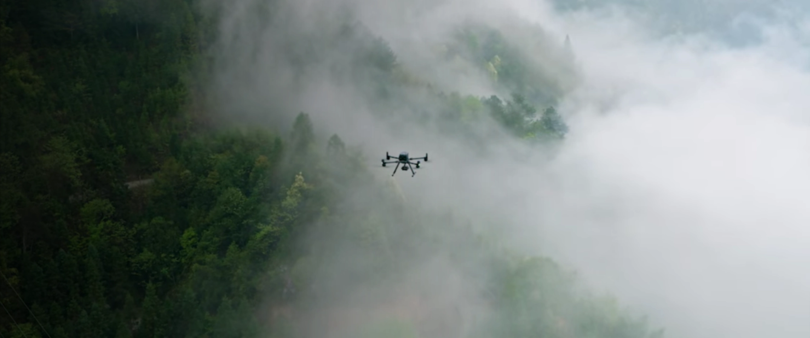
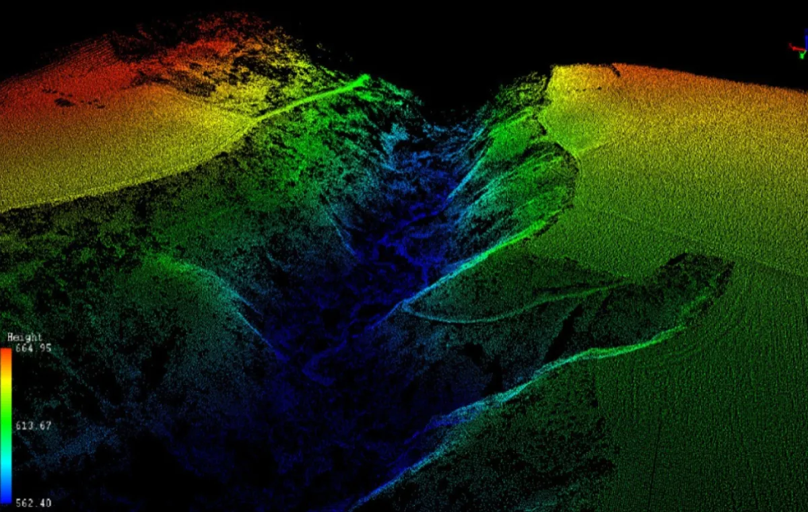
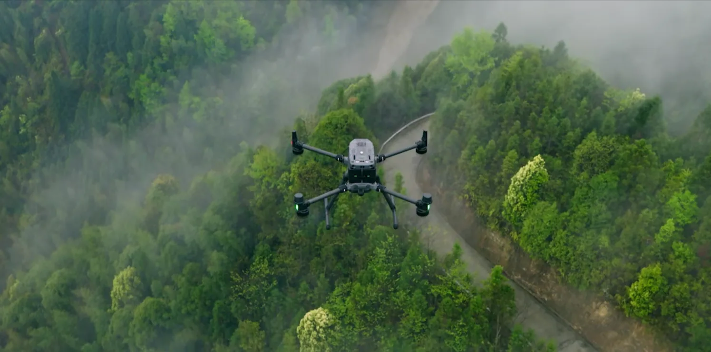
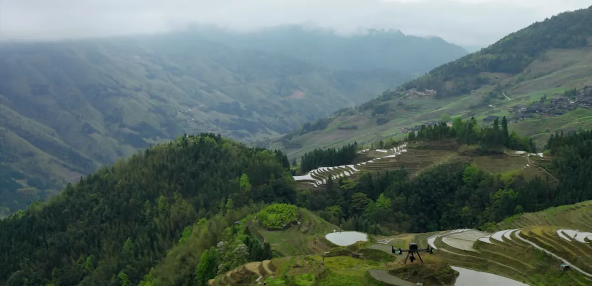
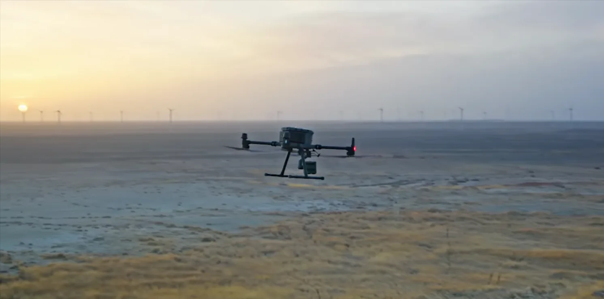

Professional Photogrammetry Drone Surveys
High-resolution 3D models and orthomosaics for construction, real estate, and land development in Costa Rica — ±2 cm horizontal accuracy with RTK positioning.

What is Photogrammetry?
Photogrammetry is a sophisticated surveying technique that uses overlapping aerial photographs to create precise 3D models and accurate orthomosaics of surveyed areas. By capturing hundreds of images from slightly different angles using a drone, we can reconstruct the complete geometry of your site with exceptional visual detail and accuracy.
Our photogrammetry surveys in Costa Rica use the latest DJI Phantom 4 RTK drone equipped with high-resolution cameras and RTK positioning technology. This combination delivers orthomosaics with ground resolution of 1.5 cm per pixel or better, along with detailed 3D point clouds and Digital Surface Models.
How Photogrammetry Works
The photogrammetry process involves several key steps:
- Flight Planning: We create automated flight paths ensuring 75–85% overlap between consecutive images
- Image Capture: The drone captures hundreds of high-resolution photographs from multiple angles and altitudes
- Ground Control Points: We establish RTK-corrected ground control points for absolute accuracy
- Image Alignment: Specialized software identifies matching features across overlapping photos
- 3D Reconstruction: The aligned photos are converted into dense point clouds and mesh models
- Georeferencing: RTK data ensures all data is precisely positioned in Costa Rican coordinate systems (CRTM05)
- Orthomosaic Generation: Individual photos are blended to create seamless orthomosaics
See a Survey Mission in Action
Watch our drone follow an automated flight path, capturing the overlapping imagery that powers each photogrammetry reconstruction.
Our Photogrammetry Equipment
DroneSurveyCR uses professional-grade equipment specifically designed for precision photogrammetry surveys across Costa Rica.
| Drone Platform | DJI Phantom 4 RTK with integrated RTK positioning and 20MP Hasselblad camera with gimbal stabilization |
|---|---|
| Ground Resolution | 1.5 cm/pixel at 120 m altitude — extremely detailed orthomosaics suitable for construction quality control |
| Horizontal Accuracy | ±2 cm horizontal, ±3 cm vertical without manual ground control points, using Costa Rica's DGPS network |
| Processing Software | Pix4D and Metashape professional photogrammetry software for precise point cloud generation and orthomosaic creation |
| Coordinate System | All data georeferenced to Costa Rica's official coordinate system (CRTM05) |
| Image Overlap | 75–85% forward and side overlap for complete, gap-free coverage and reliable reconstruction |
Photogrammetry Applications in Costa Rica
Photogrammetry is the ideal solution for projects requiring visual documentation, precise measurements, and high-quality imagery.

Construction Monitoring
Track construction progress with orthomosaics captured at regular intervals. Compare site conditions across phases and identify deviations from design plans with pixel-level precision.

Real Estate Marketing
Create stunning aerial views of properties with professional orthomosaics and 3D models. Visual marketing materials capture buyer attention and demonstrate property features clearly.

Land Development
Generate detailed orthomosaics and DSMs for subdivision planning, site layout, and environmental impact assessments. Accurate measurements support feasibility studies.

Volumetric Analysis
Calculate stockpile volumes, excavation quantities, and material measurements from 3D point clouds. Accuracy supports cost estimation and project billing.

Infrastructure Mapping
Document roads, utilities, and infrastructure with high-resolution imagery. Orthorectified data provides precise mapping for maintenance and upgrade planning.

Environmental Surveys
Document vegetation patterns, land cover changes, and habitat conditions with visual detail. High-resolution orthomosaics support conservation planning in Costa Rica's protected areas.
Varied Terrain, Captured in Detail
From misty river valleys to coastal wind farms, our drones capture every environment Costa Rica offers with consistent centimeter accuracy.

Rivers & Rainforest
Dense canopy and waterways mapped in true color, ideal for environmental documentation and riparian boundary work.

Valleys & Farmland
Wide terraced terrain reconstructed into accurate DSMs for agriculture, subdivision planning, and volumetrics.

Infrastructure & Energy
Wind farms and infrastructure documented at dawn — proof we operate reliably across every region and condition.
Photogrammetry Survey Deliverables
Our photogrammetry surveys produce comprehensive datasets with multiple output formats for various applications.
- Orthomosaic (GeoTIFF) — Seamless, georeferenced aerial image mosaic at 1.5 cm resolution
- 3D Point Cloud — Dense point cloud containing millions of 3D coordinates with RGB color values
- Digital Surface Model (DSM) — Elevation model including trees, buildings, and infrastructure
- 3D Mesh Model — Textured 3D surface model for visualization and measurement
- Volume Calculations — Stockpile, excavation, and material volume measurements with accuracy analysis
- Contour Maps — Automatically generated contour lines at specified intervals from DSM data
- Classified Point Cloud — Point clouds classified by type (ground, vegetation, buildings, etc.)
- Camera Position Report — Flight path and camera position documentation for quality assurance
- Accuracy Assessment — Ground control point analysis and accuracy certification
- Web Portal Access — Cloud-based viewer for interactive 3D model exploration and measurements
Photogrammetry vs LiDAR: Choosing the Right Technology
Both photogrammetry and LiDAR are powerful surveying technologies, but each has distinct advantages depending on your project requirements.
Choose Photogrammetry When:
- Visual documentation is critical — You need high-resolution orthomosaics with true color imagery
- Measuring surface features — Infrastructure, buildings, and visible structures require detailed surface modeling
- Cost efficiency matters — Photogrammetry is typically more economical than LiDAR for open areas
- Good visibility exists — Clear sky conditions enable reliable image capture and processing
- Real estate marketing — Professional aerial imagery drives buyer engagement
- Construction monitoring — Regular orthomosaics track progress and compare phases
Choose LiDAR When:
- Dense vegetation exists — LiDAR penetrates tree canopy to map ground beneath
- Extreme accuracy needed — LiDAR provides sub-5 cm vertical accuracy and reveals micro-topography
- Weather conditions challenging — LiDAR operates effectively in cloudy or hazy conditions
- Rapid surveys required — Single LiDAR flight covers areas that would need many photogrammetry flights
- Terrain modeling priority — Accurate bare-earth DEMs essential for hydrology and infrastructure planning
Expert Recommendation: Many projects benefit from combining both technologies. Use LiDAR for terrain mapping under vegetation and photogrammetry for visual documentation and infrastructure detail. Our team can advise on the optimal approach for your specific survey goals.
Photogrammetry Survey Pricing
Transparent, competitive pricing for professional photogrammetry surveys across Costa Rica.
Standard Photogrammetry Survey
Plus $80 USD per hectare of survey area.
Example: 50-hectare property = $1,000 + (50 × $80) = $5,000
What's Included:
- Professional flight planning and execution
- Full orthomosaic generation at 1.5 cm resolution
- Dense point cloud processing
- Digital Surface Model creation
- GeoTIFF and standard format deliverables
- Quality assurance and accuracy report
- Web portal access for 60 days
- Extended storage options available
Why Choose DroneSurveyCR for Photogrammetry

Professional Equipment
DJI Phantom 4 RTK with integrated RTK positioning and 20MP Hasselblad camera. No compromises on hardware quality.
DGAC Licensed
Full authorization from Costa Rica's Civil Aviation Authority. Authorized to operate unmanned aircraft throughout the country legally and safely.
National Coverage
Available for surveys anywhere in Costa Rica — from remote Caribbean jungles to Pacific coastal properties. We operate in all regions and climate conditions.
Rapid Turnaround
Most surveys processed and delivered within 72 hours. For urgent projects, express processing is available for time-sensitive applications.
Certified Accuracy
Every survey includes formal accuracy assessment and certification. RTK positioning ensures absolute accuracy without manual ground control points.
Experienced Team
Certified drone operators with advanced photogrammetry expertise. We deliver professional-grade results that meet international standards.
Photogrammetry FAQ
What is the accuracy of photogrammetry surveys?
Photogrammetry with RTK positioning achieves horizontal accuracy of ±2 cm and vertical accuracy of ±3 cm across Costa Rica. This accuracy is suitable for construction monitoring, volumetric calculations, and land surveys. Accuracy can be further verified through comparison with ground control points if ultra-high precision is required for specific applications.
How does vegetation affect photogrammetry results?
Photogrammetry creates models of visible surfaces, including vegetation canopy. Trees, bushes, and dense forest appear as part of the 3D model. Unlike LiDAR, photogrammetry cannot see beneath tree cover. For terrain mapping in heavily forested areas like many parts of Costa Rica, LiDAR is the better choice. For areas with moderate vegetation or when you need the highest visual detail, photogrammetry excels.
What are the typical processing timelines?
Standard photogrammetry surveys are typically processed and delivered within 72 hours of flight completion. Processing time depends on survey area size and complexity. For small urban surveys (under 5 hectares), turnaround is often 24–48 hours. Large area surveys may require additional processing time. Express processing (24-hour turnaround) is available for premium fees.
What file formats are included in deliverables?
We deliver orthomosaics as GeoTIFF files with full georeferencing in Costa Rican coordinate systems (CRTM05). Point clouds are provided in LAS format compatible with standard GIS software. DSMs are delivered as GeoTIFF. 3D models are available in OBJ and FBX formats for visualization and CAD integration. All formats include proper geospatial metadata for seamless integration with existing project data.
What weather conditions affect photogrammetry flights?
Photogrammetry requires good visibility and relatively clear conditions. Heavy rain or thick cloud cover reduces image quality and can prevent flight. Wind speeds above 12 m/s create flight instability. Costa Rica's wet season (May–November) requires careful scheduling around afternoon rains. We monitor weather continuously and schedule flights during optimal conditions. In cloudy conditions where photogrammetry is challenging, LiDAR remains effective.
Can photogrammetry be used for volumetric calculations?
Yes, photogrammetry is excellent for volumetric analysis. We calculate stockpile volumes, material measurements, and excavation quantities from the dense point clouds with accuracy typically within 2–3%. These calculations are widely used for billing, cost estimation, and project management in quarries, construction sites, and agricultural operations across Costa Rica.
Get a Photogrammetry Survey Quote Today
Ready to capture your property or project with professional photogrammetry? Contact DroneSurveyCR for a free quote. We'll assess your specific needs and recommend the best approach for your surveying goals.